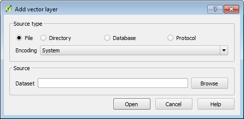
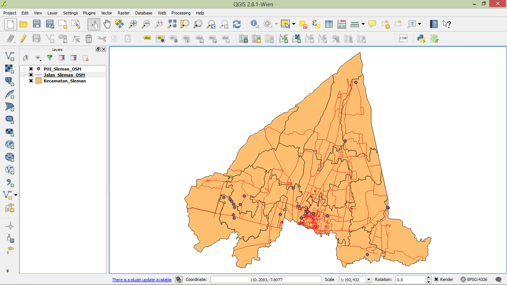
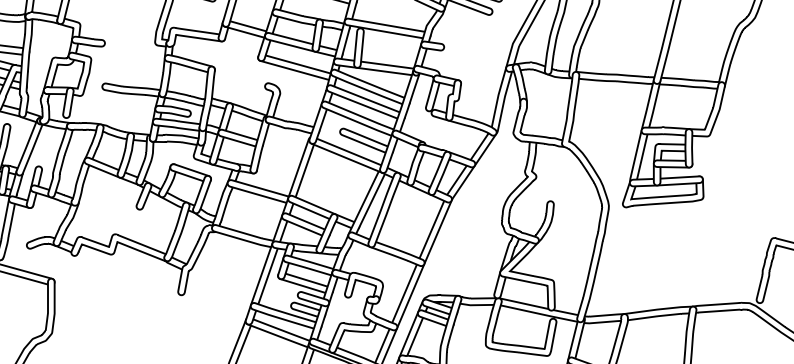
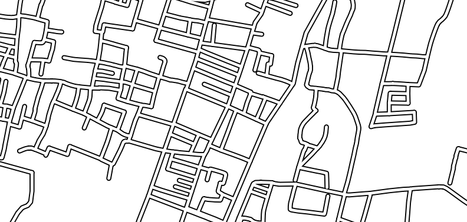
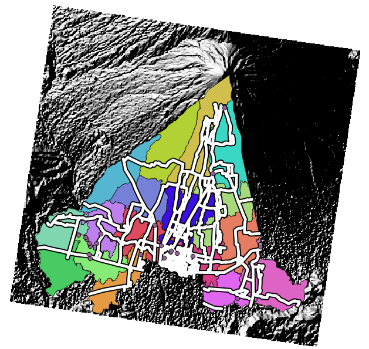
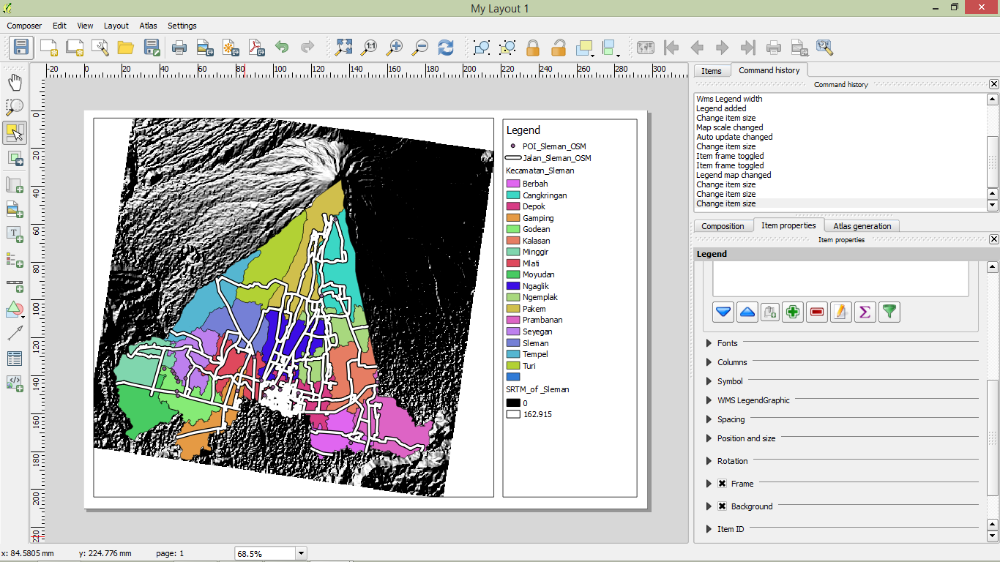

Learning Objectives
Identify data types in QGIS
Understand symbology
Understand map layout
Before we dive deeper into InaSAFE, we will review the QGIS techniques that we covered in Unit 2. We will once more go over some of they key aspects of QGIS, including adding vector and raster layers, symbolising layers and using the Print Composer. If you feel competent in all of these areas, feel free to jump ahead to the next module, but otherwise follow along for a brief review!
As you may recall, there are two types of data that we often use in QGIS: raster and vector data. Raster data is characterised as an array of data which consists of rows and columns, like the pixels in an image. Vector data, on the other hand, consists of discrete features made of points and lines, and their position is defined by coordinates.
Let’s add vector data to a new project.
Open a new QGIS project. Your map and Layers panel should be empty.
There are two ways to add a new vector layer to your project. Navigate to on the menu or click on the Add Vector Layer button on the toolbar:
If you can’t find the toolbar button, right-click the toolbars and make sure that the box is checked next to File.
The Add vector layer dialog looks like this:
Click on the Browse button and navigate to your exercise data.
Go into the qgis/Sleman/ directory and select
Jalan_Sleman_OSM, POI_Sleman and
Kecamatan_Sleman.
Select multiple files by holding the CTRL key on your
keyboard as you click each file.
Click Open and then Open again.
Your map canvas will now look like this:
Great! You’ve added some vector data to your map.
Note
Remember that there are three kinds of vectors:
points
lines
polygons
We have just added one layer of each type.
Raster data has different characteristics than vector data. Raster data is composed of rows and columns which form small boxes (known as pixels). The pixels contain information, which is usually expressed as greyscale or colour. The information in each pixel could be the altitude of a point, the size of the population, the area’s colour or another value.
There are two ways to add a new raster layer to your project. Navigate to on the menu or click on the Add Raster Layer button on the toolbar:
Navigate to qgis/Sleman/SRTM/ and select SRTM_Sleman.tif,
which depicts the topography of the area.
Click Open. The raster will be added to our project.
Next we will symbolise the data to make it easier to understand.
Layer symbology is useful so that users can easily understand our maps. It is also important to make our maps more attractive. Your choice of a layer’s symbology is very important to deliver the right information.
Let’s symbolise the district layer that we’ve added:
Right-click on the Kecamatan_Sleman layer, and click Properties, or double-click the layer name.
Click on the Style tab.
Notice all the options that we have to change the appearance of this layer. We can change the layer’s transparency or its colour, or make even more detailed variations by clicking on Change.
We can also base the symbology on the data contained in the layer itself.
Click on the box that says Single Symbol and change it to Categorized.
Change the Color Ramp to a set of colours that you like, and then click Classify. It may look something like this (although your colours will be different):
Click OK to apply the style changes.
Next, let’s symbolise our roads layer.
Double-click Jalan_Sleman_OSM in the Layers panel to open the Properties window.
Click on the Style tab.
Adjust the colour as you like, or choose one of the style presets that are displayed at the bottom.
Feel free to experiment. As you make changes, click Apply to view your changes on the map.
If you use multiple symbologies (as we covered in Unit 2), your roads may end up looking like this:
This isn’t ideal. To fix this, open the Properties window and on the Style tab click on the Advanced button and choose Symbol Levels. Check the box next to Enable symbol levels.
The roads will then look correct:
Try editing the symbology of the POI_Sleman_OSM layer on your own.
Your map should end up looking something like this:
Your map is a medium to communicate information (as well as your ideas). Layer symbology is used to convey the content of your data so that it can be easily understood by the user. By creating a map layout, you are going a step further in using your map as a way to convey information.
For a full review of Map Composer, refer back to Unit 2. For now, let’s create a basic layout with a legend.
Start a new Map Composer window by going to .
Click the Add new map button and draw a box on the left side of the canvas.
Now click on the Add new legend button and draw a box on the right side of the canvas.
Your map will look similar to this:
Play around a bit with the Print Composer if you like, and refresh your memory!
Now it’s time to get back to InaSAFE!